Abschied und Trauer – wie Menschen ihrer Toten gedenken – Lesespurgeschichte mit Rätselaufgaben (Klasse 9)

Arbeit und Leistung – was macht Arbeit wertvoll? – Lesespurgeschichte mit Rätselaufgaben (Klasse 9)

Blues und Gospel – Stimmen der Hoffnung – Lesespurgeschichte mit Rätselaufgaben (Klasse 9)
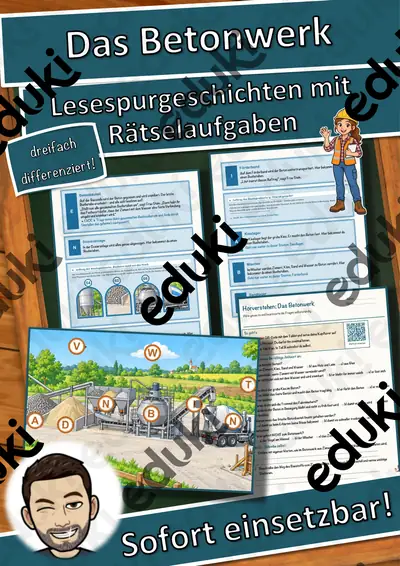
Das Betonwerk – Lesespurgeschichte mit Rätselaufgaben (Klasse 9)
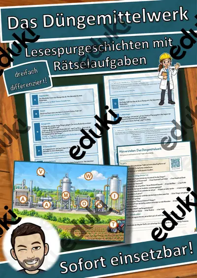
Das Düngemittelwerk – Lesespurgeschichte mit Rätselaufgaben (Klasse 9)
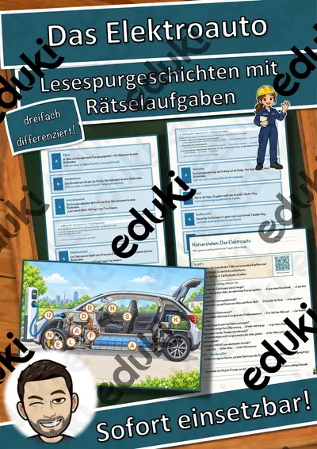
Das Elektroauto – Lesespurgeschichte mit Rätselaufgaben (Klasse 9)
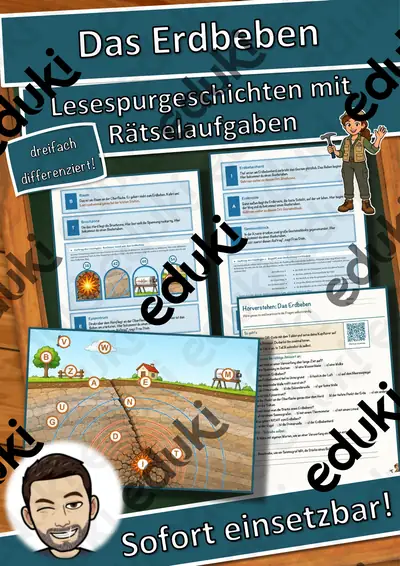
Das Erdbeben – Lesespurgeschichte mit Rätselaufgaben (Klasse 9)
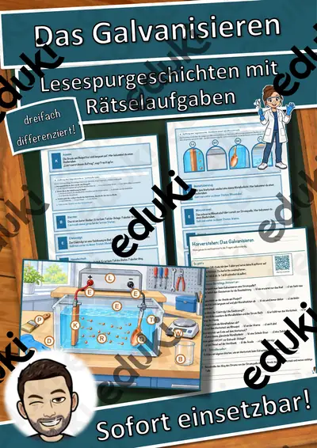
Das Galvanisieren – Lesespurgeschichte mit Rätselaufgaben (Klasse 9)

Das Gehirn – Lesespurgeschichte mit Rätselaufgaben (Klasse 9)
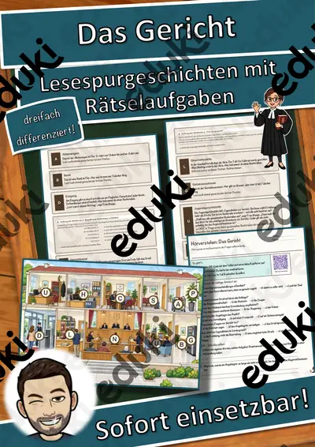
Das Gericht – Lesespurgeschichte mit Rätselaufgaben (Klasse 9)
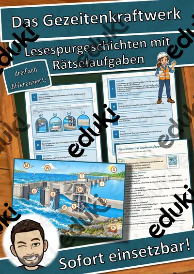
Das Gezeitenkraftwerk – Lesespurgeschichte mit Rätselaufgaben (Klasse 9)
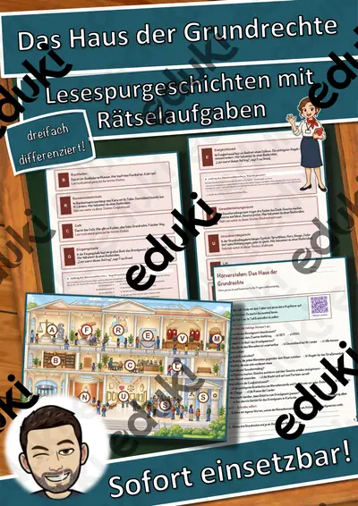
Das Haus der Grundrechte – Lesespurgeschichte mit Rätselaufgaben (Klasse 9)

Das Hormonsystem – Lesespurgeschichte mit Rätselaufgaben (Klasse 9)
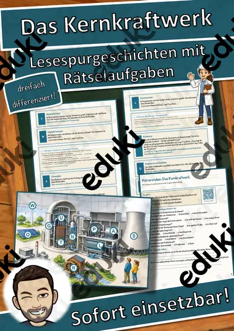
Das Kernkraftwerk – Lesespurgeschichte mit Rätselaufgaben (Klasse 9)
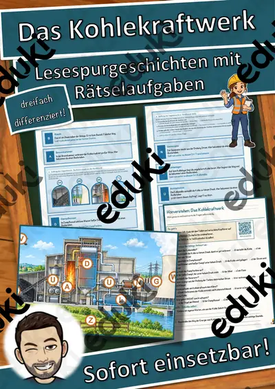
Das Kohlekraftwerk – Lesespurgeschichte mit Rätselaufgaben (Klasse 9)

Das Lymphsystem – Lesespurgeschichte mit Rätselaufgaben (Klasse 9)

Das Mitochondrium – Lesespurgeschichte mit Rätselaufgaben (Klasse 9)
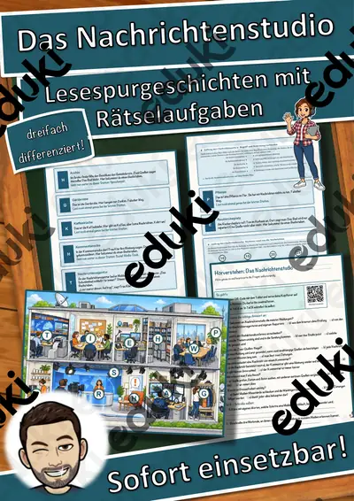
Das Nachrichtenstudio – Lesespurgeschichte mit Rätselaufgaben (Klasse 9)

Das Nervensystem – Lesespurgeschichte mit Rätselaufgaben (Klasse 9)
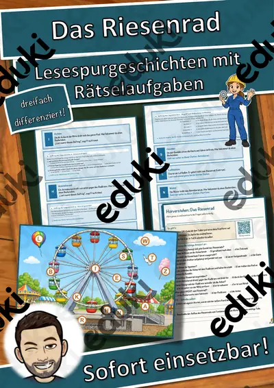
Das Riesenrad – Lesespurgeschichte mit Rätselaufgaben (Klasse 9)

Das Rückenmark – Lesespurgeschichte mit Rätselaufgaben (Klasse 9)
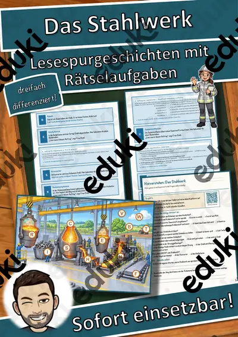
Das Stahlwerk – Lesespurgeschichte mit Rätselaufgaben (Klasse 9)
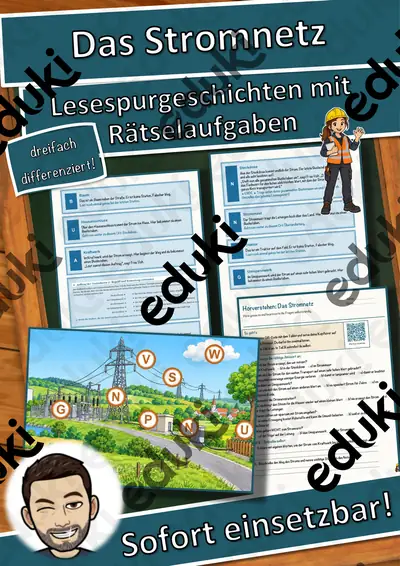
Das Stromnetz – Lesespurgeschichte mit Rätselaufgaben (Klasse 9)

Das Tonstudio – Lesespurgeschichte mit Rätselaufgaben (Klasse 9)
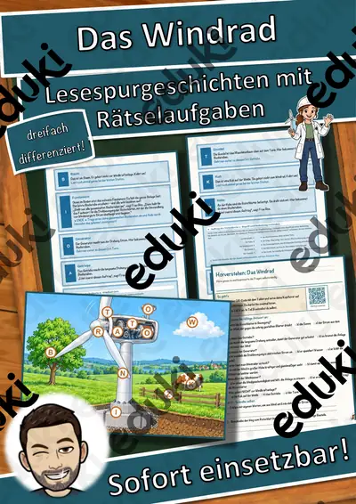
Das Windrad – Lesespurgeschichte mit Rätselaufgaben (Klasse 9)
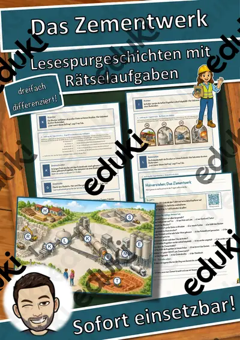
Das Zementwerk – Lesespurgeschichte mit Rätselaufgaben (Klasse 9)
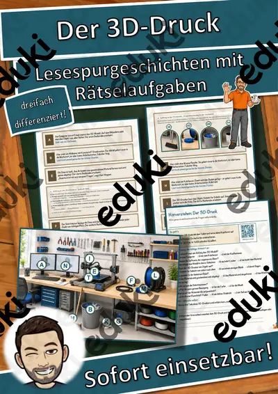
Der 3D-Druck – In der Technik-Werkstatt – Lesespurgeschichte mit Rätselaufgaben (Klasse 9)
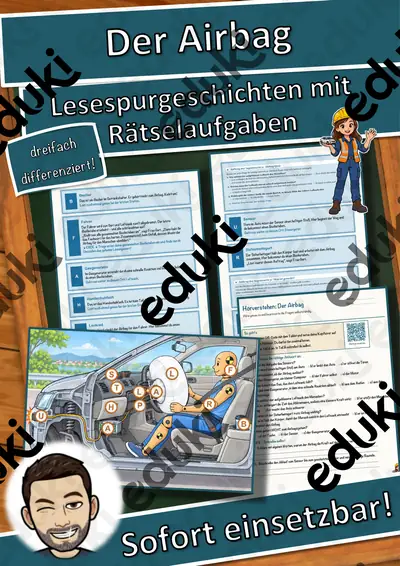
Der Airbag – Lesespurgeschichte mit Rätselaufgaben (Klasse 9)
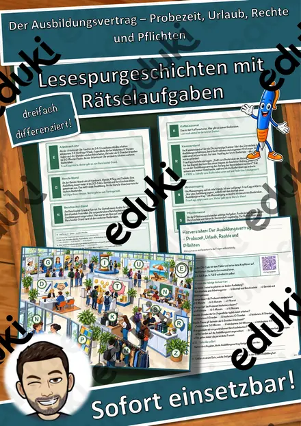
Der Ausbildungsvertrag – Probezeit, Urlaub, Rechte und Pflichten – Lesespurgeschichte mit Rätselaufgaben (Klasse 9)
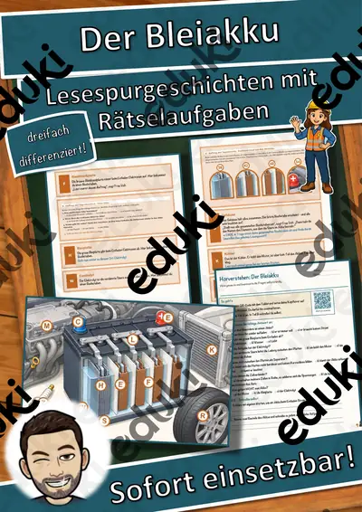
Der Bleiakku – Lesespurgeschichte mit Rätselaufgaben (Klasse 9)
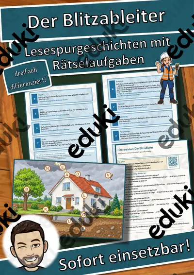
Der Blitzableiter – Lesespurgeschichte mit Rätselaufgaben (Klasse 9)

Der Dynamo – Lesespurgeschichte mit Rätselaufgaben (Klasse 9)
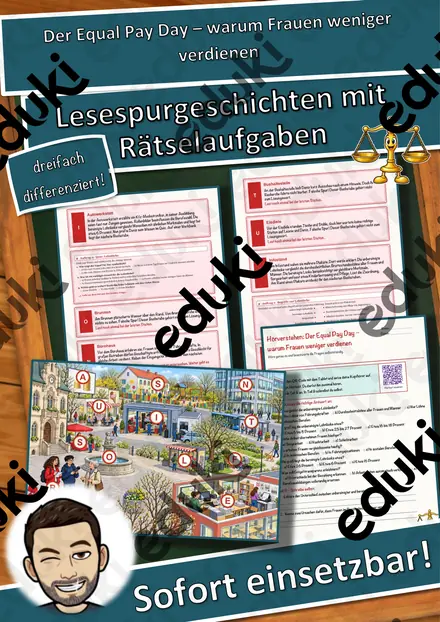
Der Equal Pay Day – warum Frauen weniger verdienen – Lesespurgeschichte mit Rätselaufgaben (Klasse 9)

Der Erste Weltkrieg – vom Kriegsbeginn zum Waffenstillstand – Lesespurgeschichte mit Rätselaufgaben (Klasse 9)
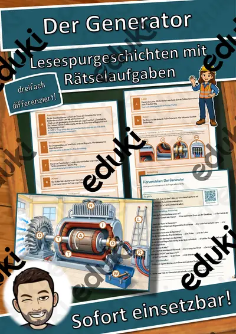
Der Generator – Lesespurgeschichte mit Rätselaufgaben (Klasse 9)
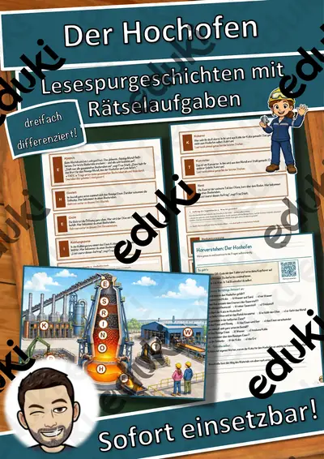
Der Hochofen – Lesespurgeschichte mit Rätselaufgaben (Klasse 9)

Der Hungerwinter 1947 – Leben nach dem Krieg – Lesespurgeschichte mit Rätselaufgaben (Klasse 9)
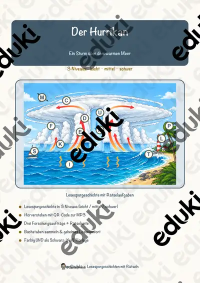
Der Hurrikan – Lesespurgeschichte mit Rätselaufgaben (Klasse 9)
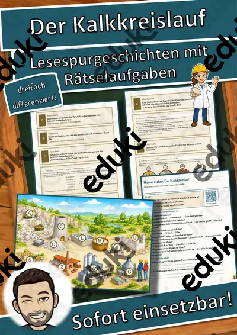
Der Kalkkreislauf – Lesespurgeschichte mit Rätselaufgaben (Klasse 9)
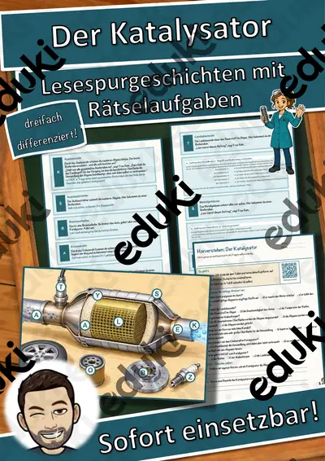
Der Katalysator – Lesespurgeschichte mit Rätselaufgaben (Klasse 9)
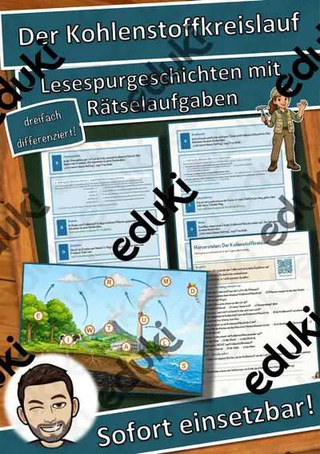
Der Kohlenstoffkreislauf – Lesespurgeschichte mit Rätselaufgaben (Klasse 9)
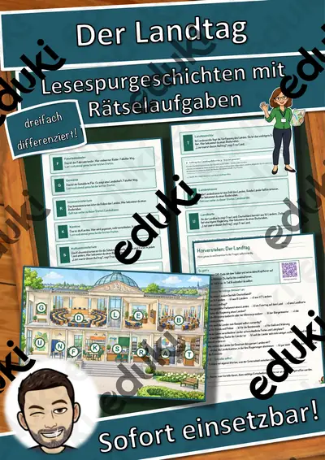
Der Landtag – Lesespurgeschichte mit Rätselaufgaben (Klasse 9)

Der Laser – Lesespurgeschichte mit Rätselaufgaben (Klasse 9)
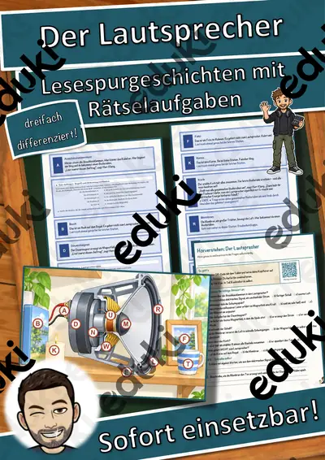
Der Lautsprecher – Lesespurgeschichte mit Rätselaufgaben (Klasse 9)
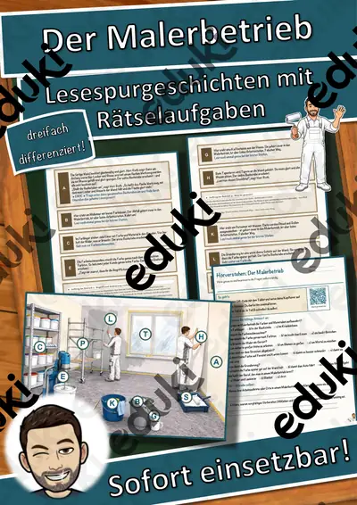
Der Malerbetrieb – Ein Praktikum beim Maler – Lesespurgeschichte mit Rätselaufgaben (Klasse 9)

Der Mietvertrag – die erste eigene Wohnung – Lesespurgeschichte mit Rätselaufgaben (Klasse 9)
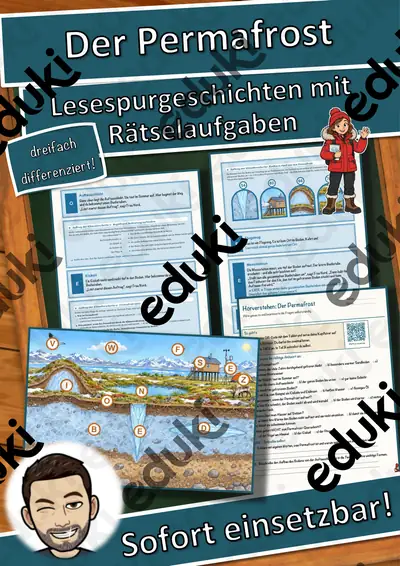
Der Permafrost – Lesespurgeschichte mit Rätselaufgaben (Klasse 9)
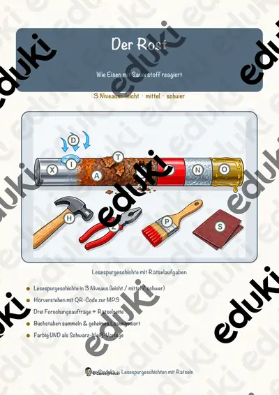
Der Rost – Lesespurgeschichte mit Rätselaufgaben (Klasse 9)
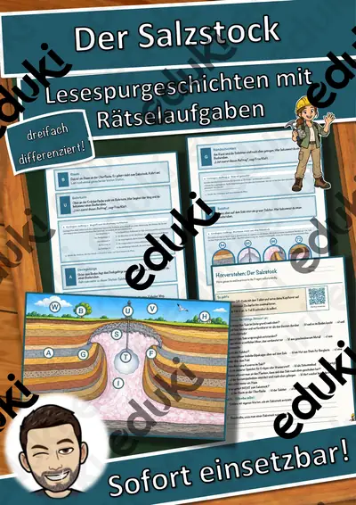
Der Salzstock – Lesespurgeschichte mit Rätselaufgaben (Klasse 9)
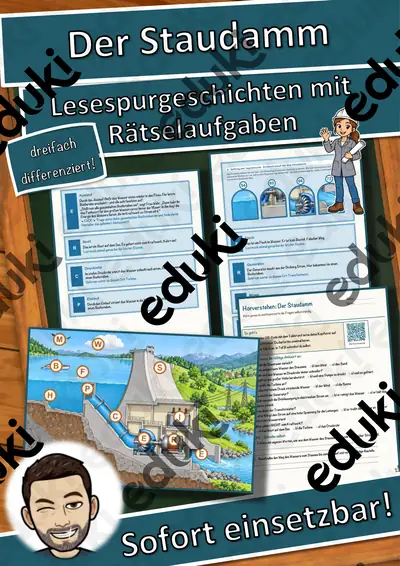
Der Staudamm – Lesespurgeschichte mit Rätselaufgaben (Klasse 9)
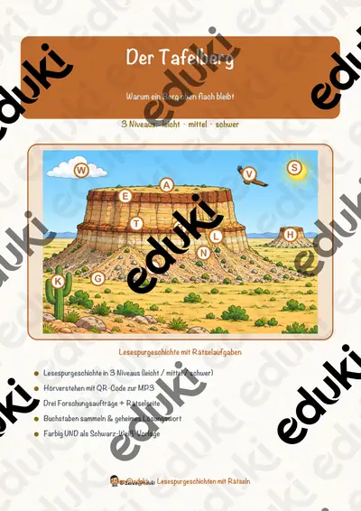
Der Tafelberg – Lesespurgeschichte mit Rätselaufgaben (Klasse 9)
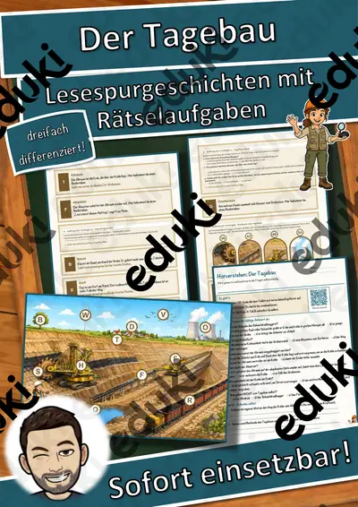
Der Tagebau – Lesespurgeschichte mit Rätselaufgaben (Klasse 9)
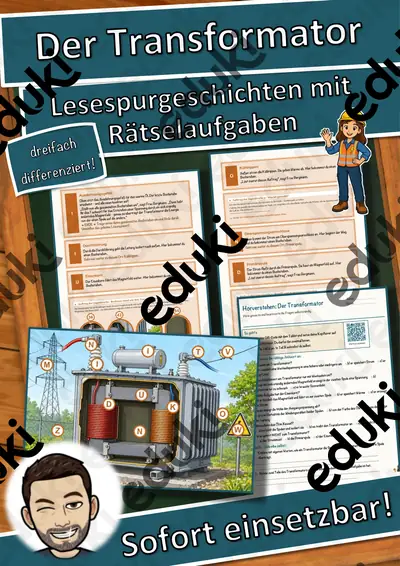
Der Transformator – Lesespurgeschichte mit Rätselaufgaben (Klasse 9)
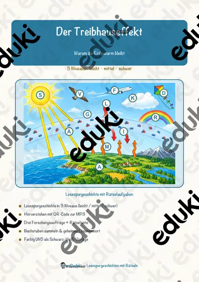
Der Treibhauseffekt – Lesespurgeschichte mit Rätselaufgaben (Klasse 9)
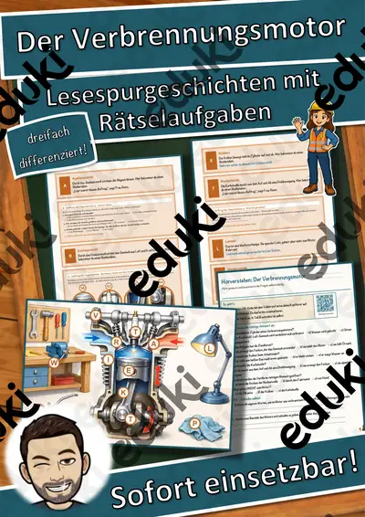
Der Verbrennungsmotor – Lesespurgeschichte mit Rätselaufgaben (Klasse 9)
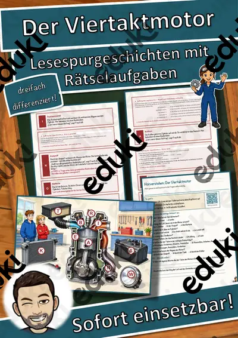
Der Viertaktmotor – Lesespurgeschichte mit Rätselaufgaben (Klasse 9)

Der Zellkern – Lesespurgeschichte mit Rätselaufgaben (Klasse 9)
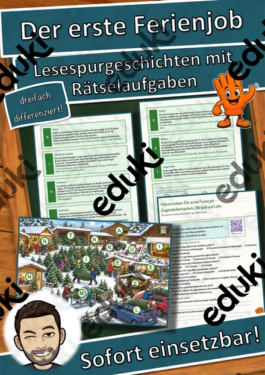
Der erste Ferienjob – Jugendarbeitsschutz, Minijob und Lohn – Lesespurgeschichte mit Rätselaufgaben (Klasse 9)
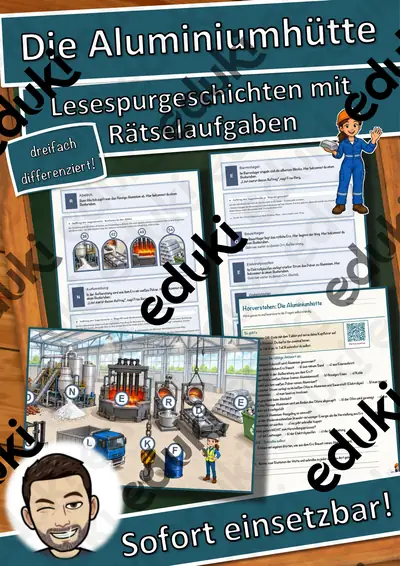
Die Aluminiumhütte – Lesespurgeschichte mit Rätselaufgaben (Klasse 9)

Die Arztpraxis – Ein Praktikum beim Arzt – Lesespurgeschichte mit Rätselaufgaben (Klasse 9)
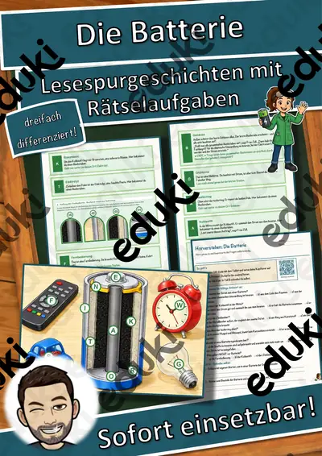
Die Batterie – Lesespurgeschichte mit Rätselaufgaben (Klasse 9)

Die Bestäubung – Lesespurgeschichte mit Rätselaufgaben (Klasse 9)
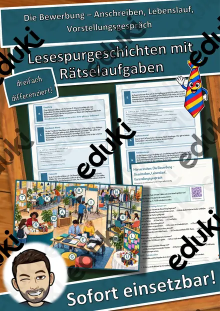
Die Bewerbung – Anschreiben, Lebenslauf, Vorstellungsgespräch – Lesespurgeschichte mit Rätselaufgaben (Klasse 9)

Die Biogasanlage – Lesespurgeschichte mit Rätselaufgaben (Klasse 9)
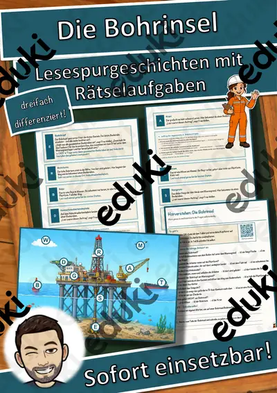
Die Bohrinsel – Lesespurgeschichte mit Rätselaufgaben (Klasse 9)
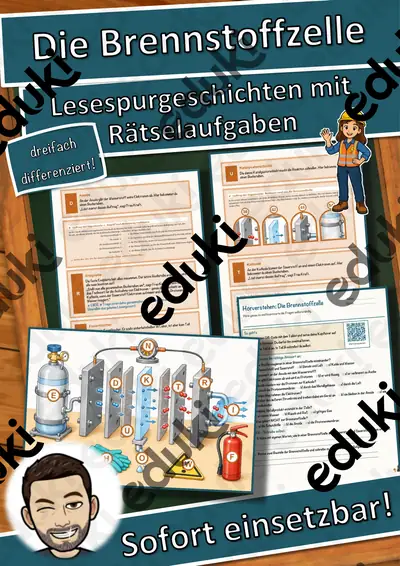
Die Brennstoffzelle – Lesespurgeschichte mit Rätselaufgaben (Klasse 9)
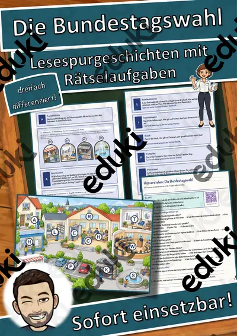
Die Bundestagswahl – Lesespurgeschichte mit Rätselaufgaben (Klasse 9)
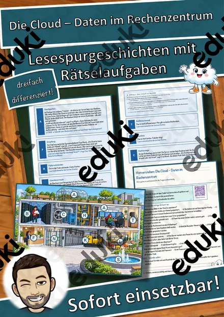
Die Cloud – Daten im Rechenzentrum – Lesespurgeschichte mit Rätselaufgaben (Klasse 9)

Die DNA – Lesespurgeschichte mit Rätselaufgaben (Klasse 9)
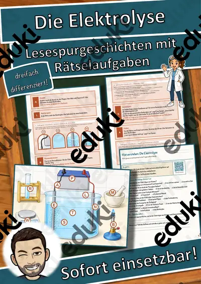
Die Elektrolyse – Lesespurgeschichte mit Rätselaufgaben (Klasse 9)
Die Erdölraffinerie – Lesespurgeschichte mit Rätselaufgaben (Klasse 9)
Die Gezeiten – Lesespurgeschichte mit Rätselaufgaben (Klasse 9)
Die Gießerei – Lesespurgeschichte mit Rätselaufgaben (Klasse 9)

Die Glasfaser – Lesespurgeschichte mit Rätselaufgaben (Klasse 9)
Die Gärtnerei – Ein Praktikum beim Gärtner – Lesespurgeschichte mit Rätselaufgaben (Klasse 9)
Die Kfz-Werkstatt – Ein Praktikum beim Kfz-Mechatroniker – Lesespurgeschichte mit Rätselaufgaben (Klasse 9)
Die Kokerei – Lesespurgeschichte mit Rätselaufgaben (Klasse 9)
Die Korrosion – Lesespurgeschichte mit Rätselaufgaben (Klasse 9)
Die Kunststoffherstellung – Lesespurgeschichte mit Rätselaufgaben (Klasse 9)

Die Leber – Lesespurgeschichte mit Rätselaufgaben (Klasse 9)

Die Leuchtdiode – Lesespurgeschichte mit Rätselaufgaben (Klasse 9)
Die Mikrowelle – Lesespurgeschichte mit Rätselaufgaben (Klasse 9)
Die Müllverbrennungsanlage – Lesespurgeschichte mit Rätselaufgaben (Klasse 9)

Die Nervenzelle – Lesespurgeschichte mit Rätselaufgaben (Klasse 9)
Die Neutralisation – Lesespurgeschichte mit Rätselaufgaben (Klasse 9)

Die Novemberrevolution 1918 – vom Kaiserreich zur Demokratie – Lesespurgeschichte mit Rätselaufgaben (Klasse 9)
Die Photovoltaikanlage – Lesespurgeschichte mit Rätselaufgaben (Klasse 9)
Die Plattentektonik – Lesespurgeschichte mit Rätselaufgaben (Klasse 9)
Die Raffinerie – Lesespurgeschichte mit Rätselaufgaben (Klasse 9)
Die Rakete – Lesespurgeschichte mit Rätselaufgaben (Klasse 9)
Die Recyclinganlage – Lesespurgeschichte mit Rätselaufgaben (Klasse 9)

Die Romantik – Musik der Gefühle – Lesespurgeschichte mit Rätselaufgaben (Klasse 9)

Die Röntgenröhre – Lesespurgeschichte mit Rätselaufgaben (Klasse 9)
Die Schneiderei – Ein Praktikum beim Schneider – Lesespurgeschichte mit Rätselaufgaben (Klasse 9)
Die Schreinerei – Ein Praktikum beim Tischler – Lesespurgeschichte mit Rätselaufgaben (Klasse 9)

Die Schuldenfalle – Ratenkauf, Handyvertrag und Zahlpause – Lesespurgeschichte mit Rätselaufgaben (Klasse 9)
Die Seife – Lesespurgeschichte mit Rätselaufgaben (Klasse 9)
Die Solarzelle – Lesespurgeschichte mit Rätselaufgaben (Klasse 9)

Die Sonne – Lesespurgeschichte mit Rätselaufgaben (Klasse 9)
Die Titration – Lesespurgeschichte mit Rätselaufgaben (Klasse 9)

Die Vererbung – Lesespurgeschichte mit Rätselaufgaben (Klasse 9)

Die Wärmedämmung – wo das Haus Wärme verliert – Lesespurgeschichte mit Rätselaufgaben (Klasse 9)
Die Wärmepumpe – Lesespurgeschichte mit Rätselaufgaben (Klasse 9)
Fernöstliche Religionen – Lesespurgeschichte mit Rätselaufgaben (Klasse 9)

Filmmusik – wie Musik Bilder lenkt – Lesespurgeschichte mit Rätselaufgaben (Klasse 9)
Fitness und Krafttraining – richtig trainieren – Lesespurgeschichte mit Rätselaufgaben (Klasse 9)
Fotografie – der Bildaufbau – Lesespurgeschichte mit Rätselaufgaben (Klasse 9)
Glauben in Freiheit – Religionsfreiheit und Toleranz – Lesespurgeschichte mit Rätselaufgaben (Klasse 9)

Hip-Hop – Rap, DJ und Beat – Lesespurgeschichte mit Rätselaufgaben (Klasse 9)
Impressionismus – Malen im Freien – Lesespurgeschichte mit Rätselaufgaben (Klasse 9)

Inside an Apple Tree – Lesespurgeschichte mit Rätselaufgaben auf Englisch (Klasse 9)

Jazz – Musik aus New Orleans – Lesespurgeschichte mit Rätselaufgaben (Klasse 9)
Komponistinnen – Frauen in der Musikgeschichte – Lesespurgeschichte mit Rätselaufgaben (Klasse 9)
Kunst im öffentlichen Raum – Denkmäler und mehr – Lesespurgeschichte mit Rätselaufgaben (Klasse 9)
Kältebus und Wärmestube – Hilfe für wohnungslose Menschen im Winter – Lesespurgeschichte mit Rätselaufgaben (Klasse 9)
Künstlerinnen – vergessen und wiederentdeckt – Lesespurgeschichte mit Rätselaufgaben (Klasse 9)
Künstliche Intelligenz – wie Maschinen aus Beispielen lernen – Lesespurgeschichte mit Rätselaufgaben (Klasse 9)

Liebe, Freundschaft, Partnerschaft – was Beziehungen stark macht – Lesespurgeschichte mit Rätselaufgaben (Klasse 9)

Markt und Preis – Angebot und Nachfrage am Christbaummarkt – Lesespurgeschichte mit Rätselaufgaben (Klasse 9)
Materialpaket Winter für die 9. Klasse: 5 Lesespurgeschichten mit Rätselaufgaben fächerübergreifend (Hungerwinter 1947, Permafrost, Christbaummarkt & mehr)
Musikvideos – wie Bild und Klang zusammenwirken – Lesespurgeschichte mit Rätselaufgaben (Klasse 9)
Phishing und Betrug im Netz erkennen – Lesespurgeschichte mit Rätselaufgaben (Klasse 9)
Pop Art – Kunst aus dem Alltag – Lesespurgeschichte mit Rätselaufgaben (Klasse 9)
Produktdesign im Alltag – vom Problem zum Prototyp – Lesespurgeschichte mit Rätselaufgaben (Klasse 9)

Quali Mathematik Teil A – rechnen ohne Taschenrechner – Lesespurgeschichte mit Prüfungsaufgaben (Klasse 9)

Reiz und Reaktion – Lesespurgeschichte mit Rätselaufgaben (Klasse 9)
Rettungsschwimmen – sicher im Wasser helfen – Lesespurgeschichte mit Rätselaufgaben (Klasse 9)

Richtig lüften im Winter – Luftfeuchtigkeit, Taupunkt und Schimmel – Lesespurgeschichte mit Rätselaufgaben (Klasse 9)
Roboter in der Fabrik – Automatisierung und Arbeit – Lesespurgeschichte mit Rätselaufgaben (Klasse 9)

Rock ’n’ Roll und Rockmusik – Lesespurgeschichte mit Rätselaufgaben (Klasse 9)

Sich für den Frieden einsetzen – Lesespurgeschichte mit Rätselaufgaben (Klasse 9)
Sport und Ernährung – Energie fürs Training – Lesespurgeschichte mit Rätselaufgaben (Klasse 9)
Sport und Umwelt – Natursport ohne Spuren – Lesespurgeschichte mit Rätselaufgaben (Klasse 9)
Street Art und Graffiti – Kunst im Stadtraum – Lesespurgeschichte mit Rätselaufgaben (Klasse 9)
Tabellenkalkulation – Zellen, Formeln, Diagramme – Lesespurgeschichte mit Rätselaufgaben (Klasse 9)
Verschlüsselung – vom Caesar-Code zum Schloss im Browser – Lesespurgeschichte mit Rätselaufgaben (Klasse 9)
Wettkampf und Nervosität – mit Druck umgehen – Lesespurgeschichte mit Rätselaufgaben (Klasse 9)
Lesespurgeschichten in der 9. Klasse
Für die neunte Klasse sind die Texte dichter und die Rechenschritte anspruchsvoller. Das Material eignet sich auch zur Wiederholung vor Leistungsnachweisen.
Jede Geschichte liegt in drei Niveaustufen vor, die sich in Textlänge, Satzbau und Aufgabenanspruch unterscheiden. Weg, Stationen und Lösungswort bleiben gleich, sodass alle Fassungen gleichzeitig in einer Klasse laufen können.
Themen auf dieser Seite
Beispiele aus dieser Sammlung: Wettkampf und Nervosität · Musikvideos · Materialpaket Winter für die 9. Klasse: 5 Lesespurgeschichten mit Rätselaufgaben fächerübergreifend (Hungerwinter 1947, Permafrost, Christbaummarkt & mehr) · Die DNA · Street Art und Graffiti · Der Landtag · Das Haus der Grundrechte · Fitness und Krafttraining.